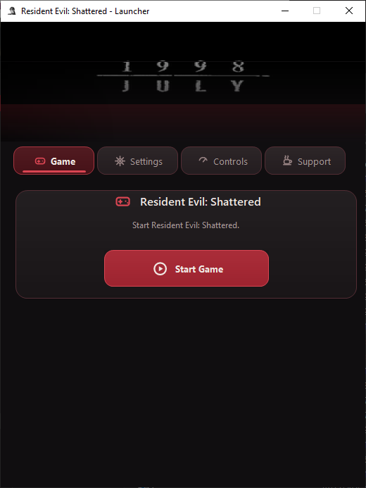

Available
The v0.1.6 public release adds Harassment difficulty to Story Mode and brings new appearances from Mr. X and Nemesis.
v0.1.6 public release
Take on Story Mode's new Harassment difficulty, find the Benelli in Richard's room, and encounter new appearances from Mr. X and Nemesis. v0.1.6 also improves mod support and multiplayer.
No original Resident Evil game assets are included.
Users must provide their own legally obtained supported game data.
Online co-op is available for the complete campaign. SplitScreen is also supported.
Why Shattered?
SHATTERED asks what happens when that fear becomes shared: when two players step into the same mansion, split attention across the room, and turn survival-horror tension into a co-op memory.
The goal is not to replace the original feeling. It is to preserve the mood, friction, and strange quiet of classic survival horror while opening a new way to experience it with a friend.
Current state
The v0.1.6 public release adds Harassment difficulty to Story Mode and brings new appearances from Mr. X and Nemesis.
Play together online throughout the campaign, or use SplitScreen.
Online co-op covers the complete campaign. v0.1.6 also improves multiplayer navigation and fixes several multiplayer issues.
The active source code, internal tools, research branches, and development assets are maintained outside this repository.
v0.1.6 changelog
Screenshots

Setup
SHATTERED v0.1.6 is documented for Windows and a legally obtained copy of GOG's Resident Evil 1 PC Port. Other versions are not currently listed as supported game-data versions.
Community
Help shape what gets tested next across Depmify's survival-horror projects.
Follow development, ask questions, share feedback, and report what breaks in public builds.
Find a friend for online co-op across the complete campaign, or play together locally through SplitScreen.
The Discord brings both communities together around release news, feedback, and player coordination. SHATTERED supports online co-op throughout the complete campaign, as well as SplitScreen.
Support us
Depmify is a fan developer focused on bringing classic survival horror experiences closer to players who want to explore them together. Alongside RESIDENT EVIL: SHATTERED, Depmify also develops Silent Hill: United, an unofficial multiplayer project for Silent Hill 1 built around preserving atmosphere while adding shared presence.
Optional support helps with testing time, public builds, documentation, and the long process of turning strange survival-horror experiments into something people can actually play with friends.
No original game assets are sold or distributed. Support is for the time spent developing, testing, and maintaining fan project releases.
Support Depmify Silent Hill: United